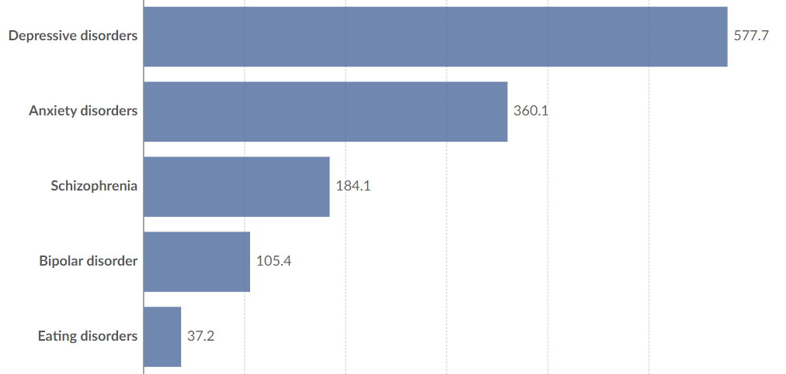

GENERAL INFO:
"Mental illness is nothing to be shamed of ,but stigma and bias shame us all"
Mental health is a state of mental well-being that enables people to cope with the stresses of life, realize
their abilities, learn well and work well, and contribute to their community. It has intrinsic and instrumental value
and is integral to our well-being.
At any one time, a diverse set of individual, family, community and structural factors may combine to protect or undermine mental health.
At any one time, a diverse set of individual, family, community and structural factors may combine to protect or undermine mental health.
The fear of judgment silences many from discussing mental health openly. This silence perpetuates stigma and prevents individuals from seeking support. Encouraging open conversations can break down barriers, fostering understanding and empathy. Creating safe spaces where people feel heard and accepted is essential for promoting mental health awareness and providing the support individuals need to thrive.
In 2019, 970 million people globally were living with a mental disorder, with anxiety and depression the most common.Globally, mental disorders account for 1 in 6 years lived with disability.
Hundreds of millions suffer from them yearly, and many more do over their lifetimes. It’s estimated that 1 in 3 women and 1 in 5 men will experience major depression in their lives.
Other conditions, such as schizophrenia and bipolar disorder, are less common but still have a large impact on people’s lives.

These pointers highlight the importance of self-awareness, social support, professional assistance,
stigma reduction, and healthy coping strategies in maintaining and improving mental health.
1. Self-care and Well-being:
Taking care of oneself is crucial for mental health. This includes getting enough sleep, eating a balanced diet, exercising regularly, and engaging in activities that bring joy and relaxation. Practicing mindfulness and stress-reduction techniques can also be beneficial.
2. Social Support:
Building and maintaining strong social connections can significantly impact mental well-being. Having a support network of friends, family, or peers can provide emotional support, practical help, and a sense of belonging, reducing feelings of loneliness and isolation.
3. Seeking Professional Help:
It's important to recognize when professional help is needed. Mental health professionals, such as therapists, counselors, psychologists, or psychiatrists, are trained to provide support and treatment for various mental health concerns. Seeking help early can lead to better outcomes.
4. Reducing Stigma:
Addressing stigma surrounding mental health is crucial for fostering understanding and empathy. Educating oneself and others about mental health conditions can help reduce stereotypes and discrimination, creating a more supportive environment for those experiencing mental health challenges.
5. Healthy Coping Mechanisms:
Developing healthy coping mechanisms is essential for managing stress and difficult emotions. This may include practicing relaxation techniques, such as deep breathing or meditation, engaging in hobbies or activities that bring pleasure, and seeking out support from others when needed. Avoiding unhealthy coping strategies, such as substance abuse or avoidance, is also important.
• Mental health is more than the absence of mental disorders.
• Mental health is an integral part of health; indeed, there is no health without mental health.
• Mental health is determined by a range of socioeconomic, biological and environmental factors.
• Cost-effective public health and intersectoral strategies and interventions exist to promote,
protect and restore mental health.
• Mental health is an integral part of health; indeed, there is no health without mental health.
• Mental health is determined by a range of socioeconomic, biological and environmental factors.
• Cost-effective public health and intersectoral strategies and interventions exist to promote,
protect and restore mental health.
Mental health is an integral and essential component of health. The WHO constitution states:
"Health is a state of complete physical, mental and social well-being and not merely the absence of
disease or infirmity." An important implication of this definition is that mental health is more
than just the absence of mental disorders or disabilities.
"Health is a state of complete physical, mental and social well-being and not merely the absence of
disease or infirmity." An important implication of this definition is that mental health is more
than just the absence of mental disorders or disabilities.
Mental health is a state of well-being in which an individual realizes his or her own abilities,
can cope with the normal stresses of life, can work productively and is able to make a contribution
to his or her community.
can cope with the normal stresses of life, can work productively and is able to make a contribution
to his or her community.
Mental health is fundamental to our collective and individual ability as humans to think, emote,
interact with each other, earn a living and enjoy life. On this basis, the promotion, protection and
restoration of mental health can be regarded as a vital concern of individuals, communities and
societies throughout the world.
interact with each other, earn a living and enjoy life. On this basis, the promotion, protection and
restoration of mental health can be regarded as a vital concern of individuals, communities and
societies throughout the world.